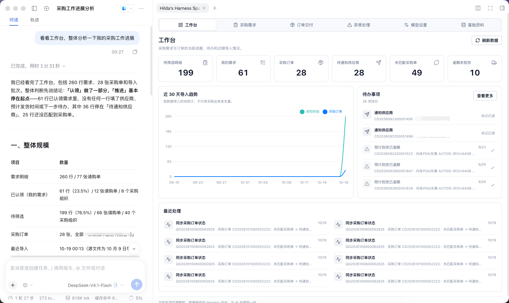

业务问题
请购单、采购订单与跟进动作分散在不同处理环节。
采购员需要先整理请购明细，再筛选和认领自己的需求，随后持续维护供应商、预计发货时间和下一步动作。项目将这些处理步骤集中到一个可操作的工作台中。
DEEPSEEK HARNESS · PROCUREMENT · AI TABLE
基于 DeepSeek Harness 构建采购业务工作台，把请购需求与采购订单整理、认领跟进和 AI 表格能力放进同一流程。采购员可以在业务面板里处理数据，也可以让 Agent 通过工具读取和更新同一份宿主数据。
在 GitHub 查看项目
PRODUCT STORY
采购数据既要便于人工判断和持续跟进，也要能被 Agent 理解并在授权的业务规则内处理。工作台围绕这两种协作方式建立统一的数据和操作入口。
业务问题
采购员需要先整理请购明细，再筛选和认领自己的需求，随后持续维护供应商、预计发货时间和下一步动作。项目将这些处理步骤集中到一个可操作的工作台中。
智能表格
复用 AI 智能表格能力，提供排序、筛选、分页、填色、分组、列配置和 AI 字段。采购员可用自然语言生成筛选与填色规则，也可为当前数据逐行生成扩展字段。
业务工作流
需求整理 导入 NC 请购单，识别字段并提示缺失或重复信息。
认领跟进 筛选需求、跨页勾选认领，维护供应商、日期、待办与备注。
订单交付 导入采购订单，查看明细，并同步关联需求的订单状态。
AI 协作 支持 AI 筛选、填色和逐行生成字段，模型设置可在面板内调整。
人机协作
核对导入预览与待复核明细，决定需求认领范围；补充供应商、预计发货时间、下一步待办和备注，并跟进订单交付。
按指令查看和搜索需求、读取工作区请购文件，并通过采购工具认领需求或更新供应商等跟进信息。
工作台和 Agent 调用同一套宿主采购服务、读写同一份数据。Agent 完成查询或变更后，采购员可以在工作台继续核对、补充和跟进。
ONE SERVICE · TWO WAYS TO WORK
AI 生成能力使用 Harness 的 deepseek-account 登录态；表格视图配置和 AI 字段结果保存在当前浏览器，采购明细、订单和模型设置由宿主存储。
CAPABILITIES
支持 NC 请购单与采购订单表格导入、预览、字段识别和重复识别。
支持跨页认领、批量维护，并保留采购需求的操作记录。
通过自然语言生成筛选条件、颜色规则和逐行 AI 字段值。
把查询、搜索、认领和更新等采购动作注册为 Harness Agent 工具。